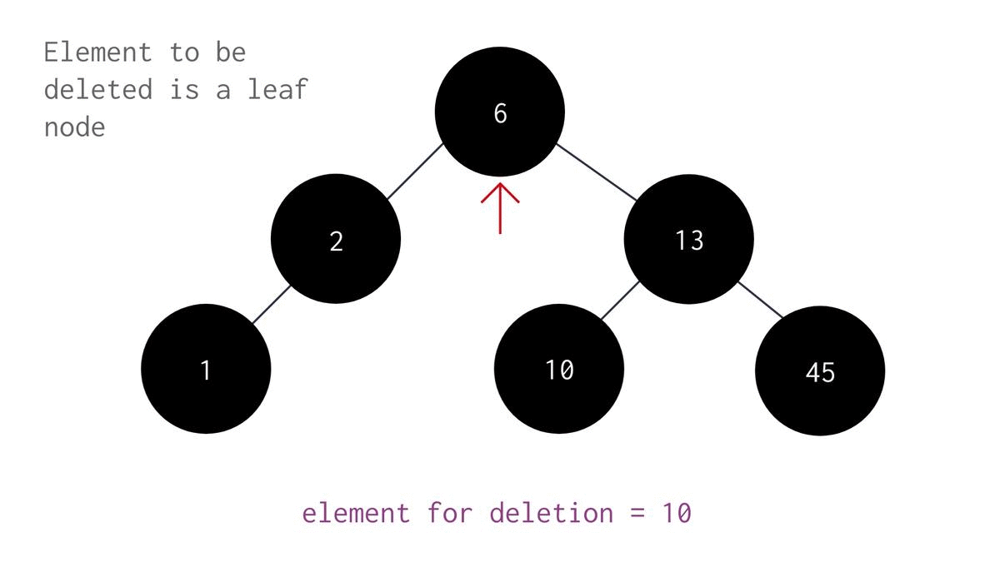

class TreeNode:
def __init__(self, data, left=None, right=None):
self.data = data
self.left = left
self.right = right
def insert_node(root_node: TreeNode, target: int):
current_node = root_node
if target == current_node.data:
print(f"t[{target}]|c[{current_node.data}]: \t\tCannot insert duplicates")
return
if target < current_node.data: # left
if current_node.left: # go left-child: if exists
print(f"t[{target}]|c[{current_node.data}]: \t\tCurrent[{current_node.data}] has ONE left-child : GO LEFT[{current_node.left.data}]")
current_node=current_node.left
return insert_node(current_node, target)
else: # insert left-child: if not exist
current_node.left = TreeNode(target)
print(f"t[{target}]|c[{current_node.data}]: \t\tCurrent[{current_node.data}] has NO left-child: INSERTED LEFT CurrentLeft[{current_node.left.data}]")
return current_node.left
else:
if current_node.right: # go right-child: if exists
print(f"t[{target}]|c[{current_node.data}]: \t\tCurrent[{current_node.data}] has ONE right-child : GO right[{current_node.right.data}]")
current_node=current_node.right
return insert_node(current_node, target)
else: # insert right-child: if not exist
current_node.right = TreeNode(target)
print(f"t[{target}]|c[{current_node.data}]: \t\tCurrent[{current_node.data}] has NO right-child: INSERTED right Currentright[{current_node.right.data}]")
pass
def insert_node_clean(root_node: TreeNode, target: int):
current_node = root_node
if target == current_node.data:
return
if target < current_node.data: # left
if current_node.left: # go left-child: if exists
current_node=current_node.left
return insert_node_clean(current_node, target)
else: # insert left-child: if not exist
current_node.left = TreeNode(target)
return current_node.left
else:
if current_node.right: # go right-child: if exists
current_node=current_node.right
return insert_node_clean(current_node, target)
else: # insert right-child: if not exist
current_node.right = TreeNode(target)
pass
1. TreeNode, Binary Tree & insert_node: Setup
Introduced previously.
# create a basic tree
# 50
# 25 75
# 10 33 56 89
# 4 11 30 40 52 61 82 95
def insert_node_list(root_node:TreeNode, node_list: list[int], show_outputs:bool=True):
for node in node_list:
if show_outputs:
insert_node(root_node, node)
else:
insert_node_clean(root_node, node)
root = None
root = TreeNode(50)
node_list = [25,75,10,33,56,89,4,11,30,40,52,61,82,95]
insert_node_list(root, node_list,show_outputs=True)t[25]|c[50]: Current[50] has NO left-child: INSERTED LEFT CurrentLeft[25]
t[75]|c[50]: Current[50] has NO right-child: INSERTED right Currentright[75]
t[10]|c[50]: Current[50] has ONE left-child : GO LEFT[25]
t[10]|c[25]: Current[25] has NO left-child: INSERTED LEFT CurrentLeft[10]
t[33]|c[50]: Current[50] has ONE left-child : GO LEFT[25]
t[33]|c[25]: Current[25] has NO right-child: INSERTED right Currentright[33]
t[56]|c[50]: Current[50] has ONE right-child : GO right[75]
t[56]|c[75]: Current[75] has NO left-child: INSERTED LEFT CurrentLeft[56]
t[89]|c[50]: Current[50] has ONE right-child : GO right[75]
t[89]|c[75]: Current[75] has NO right-child: INSERTED right Currentright[89]
t[4]|c[50]: Current[50] has ONE left-child : GO LEFT[25]
t[4]|c[25]: Current[25] has ONE left-child : GO LEFT[10]
t[4]|c[10]: Current[10] has NO left-child: INSERTED LEFT CurrentLeft[4]
t[11]|c[50]: Current[50] has ONE left-child : GO LEFT[25]
t[11]|c[25]: Current[25] has ONE left-child : GO LEFT[10]
t[11]|c[10]: Current[10] has NO right-child: INSERTED right Currentright[11]
t[30]|c[50]: Current[50] has ONE left-child : GO LEFT[25]
t[30]|c[25]: Current[25] has ONE right-child : GO right[33]
t[30]|c[33]: Current[33] has NO left-child: INSERTED LEFT CurrentLeft[30]
t[40]|c[50]: Current[50] has ONE left-child : GO LEFT[25]
t[40]|c[25]: Current[25] has ONE right-child : GO right[33]
t[40]|c[33]: Current[33] has NO right-child: INSERTED right Currentright[40]
t[52]|c[50]: Current[50] has ONE right-child : GO right[75]
t[52]|c[75]: Current[75] has ONE left-child : GO LEFT[56]
t[52]|c[56]: Current[56] has NO left-child: INSERTED LEFT CurrentLeft[52]
t[61]|c[50]: Current[50] has ONE right-child : GO right[75]
t[61]|c[75]: Current[75] has ONE left-child : GO LEFT[56]
t[61]|c[56]: Current[56] has NO right-child: INSERTED right Currentright[61]
t[82]|c[50]: Current[50] has ONE right-child : GO right[75]
t[82]|c[75]: Current[75] has ONE right-child : GO right[89]
t[82]|c[89]: Current[89] has NO left-child: INSERTED LEFT CurrentLeft[82]
t[95]|c[50]: Current[50] has ONE right-child : GO right[75]
t[95]|c[75]: Current[75] has ONE right-child : GO right[89]
t[95]|c[89]: Current[89] has NO right-child: INSERTED right Currentright[95]2. Confirm Tree
# 50
# 25 75
# 10 33 56 89
# 4 11 30 40 52 61 82 95
print(f"[L1] root.data: \t\t\t[{root.data}] (expected: 50)")
print()
print(f"[L2] root.left.data: \t\t\t[{root.left.data}] (expected: 25)")
print(f"[L2] root.right.data: \t\t\t[{root.right.data}] (expected: 75)")
print()
print(f"[L3] root.left.left.data: \t\t[{root.left.left.data}] (expected: 10)")
print(f"[L3] root.left.right.data: \t\t[{root.left.right.data}] (expected: 33)")
print(f"[L3] root.right.left.data: \t\t[{root.right.left.data}] (expected: 56)")
print(f"[L3] root.right.right.data: \t\t[{root.right.right.data}] (expected: 89)")
print()
print(f"[L4] root.left.left.left.data: \t\t[{root.left.left.left.data}] (expected: 4)")
print(f"[L4] root.left.left.right.data: \t[{root.left.left.right.data}] (expected: 11)")
print(f"[L4] root.left.right.left.data: \t[{root.left.right.left.data}] (expected: 30)")
print(f"[L4] root.left.right.right.data: \t[{root.left.right.right.data}] (expected: 40)")
print()
print(f"[L4] root.right.left.left.data: \t[{root.right.left.left.data}] (expected: 52)")
print(f"[L4] root.right.left.right.data: \t[{root.right.left.right.data}] (expected: 61)")
print(f"[L4] root.right.right.left.data: \t[{root.right.right.left.data}] (expected: 82)")
print(f"[L4] root.right.right.right.data:\t[{root.right.right.right.data}] (expected: 95)")[L1] root.data: [50] (expected: 50)
[L2] root.left.data: [25] (expected: 25)
[L2] root.right.data: [75] (expected: 75)
[L3] root.left.left.data: [10] (expected: 10)
[L3] root.left.right.data: [33] (expected: 33)
[L3] root.right.left.data: [56] (expected: 56)
[L3] root.right.right.data: [89] (expected: 89)
[L4] root.left.left.left.data: [4] (expected: 4)
[L4] root.left.left.right.data: [11] (expected: 11)
[L4] root.left.right.left.data: [30] (expected: 30)
[L4] root.left.right.right.data: [40] (expected: 40)
[L4] root.right.left.left.data: [52] (expected: 52)
[L4] root.right.left.right.data: [61] (expected: 61)
[L4] root.right.right.left.data: [82] (expected: 82)
[L4] root.right.right.right.data: [95] (expected: 95)3. delete_node: 0 or 1 Child Nodes Only
def delete_node(root_node: TreeNode, target: int, parent_node=None):
current_node = root_node
if target == current_node.data:
# 2. delete_node - delete cases 1, 2 & 3.
print(f"[Part 1: Search] t[{target}]==c[{current_node.data}]: \t\t\t\tNode Found...")
print(f"[Part 2: Delete] t[{target}]==c[{current_node.data}]: \t\t\t\tDetermine Number of Children...")
if (not current_node.left and not current_node.right): # 0-kids
# Case A: Target has 0-kid --- [(0 left + 0 right)
# only 1 parent per node(p.left or p.right)
if parent_node.left: # if exists burn it
parent_node.left = None
elif parent_node.right:
parent_node.right = None
print(f"[Part2A: Delete] t[{target}]==c[{current_node.data}]._0_kid: \t\tBurn'em!üî•[{target}], Parent[{parent_node.data}] will survive üçÄ.")
return
elif (current_node.left and not current_node.right) or (not current_node.left and current_node.right):
# Case B: 1-kid --- [(1 left + 0 right) OR (0 left + 1 right)]
if current_node.left:
target_sgl_child = current_node.left
else:
target_sgl_child = current_node.right
print(f"[Part2B: Delete] t[{target}]==c[{current_node.data}]._1_kid[{target_sgl_child.data}]: \tIs it Left or Right? kids_gramps[{parent_node.data}]")
if parent_node.left == current_node:
parent_node.left = target_sgl_child ##### 2BI REPLACE TARGET WITH TARGETS LEFT-CHILD
print(f"[Part2B: Delete] targets.child[{target_sgl_child.data}] has now assumed the identity of the target t[{target}|c{current_node.data}] and is the kid of it's (previous) gramps[{parent_node.data}]: aka now gramps.leftkid[{parent_node.left.data}]")
elif parent_node.right == current_node: # target can be a left or right child
parent_node.right = target_sgl_child ##### 2BII REPLACE TARGET WITH TARGETS LEFT-CHILD
print(f"[Part2B: Delete] targets.child[{target_sgl_child.data}] has now assumed the identity of the target t[{target}|c{current_node.data}] and is the kid of it's (previous) gramps[{parent_node.data}]: aka now gramps.rightkid[{parent_node.right.data}]")
return
else:
# Case C: 2-kid --- [(1 left + 1 right)
print(f"[Part2C: Delete] t[{target}]==c[{current_node.data}]._2_kids: \t\twhat a shame! ☠️ [TBA IN FUTURE]")
return
# 1. search_node
if target < current_node.data: # go left
if current_node.left:
print(f"[Part 1: Search] t[{target}]<c[{current_node.data}].left_child exists[{current_node.left.data}]: \tgo left...")
parent_node = current_node
current_node = current_node.left
return delete_node(current_node, target,parent_node)
else:
print(f"[Part 1: Search] t[{target}]<c[{current_node.data}].left_child doesnt exists[{None}]: Node Not Found!")
return
else:
if current_node.right:
print(f"[Part 1: Search] t[{target}]>c[{current_node.data}].right_child exists[{current_node.right.data}]: \tgo right...")
parent_node = current_node
current_node = current_node.right
return delete_node(current_node, target,parent_node)
else:
print(f"[Part 1: Search] t[{target}]>c[{current_node.data}].right_child doesnt exists[{None}]: Node Not Found!")
return4. Testing
delete_node(root,4)
# 50
# 25 75
# 10 33 56 89
# [X] 11 30 40 52 61 82 95
print()
delete_node(root,10)
# 50
# 25 75
# 11 33 56 89
# [] [X] 30 40 52 61 82 95
print()
delete_node(root,25) # NOT READY YET
# 50
# 25 75
# 11 33 56 89
# [] [] 30 40 52 61 82 95
print()
delete_node(root,11)
# 50
# 25 75
# [X] 33 56 89
# [] [] 30 40 52 61 82 95
print()
delete_node(root,25)
# 50
# 33 75
# [30] [40] 56 89
# [] [] [] [] 52 61 82 95
print()
delete_node(root,33)
# 50
# 33 75
# [30] [40] 56 89
# [] [] [] [] 52 61 82 95[Part 1: Search] t[4]<c[50].left_child exists[25]: go left...
[Part 1: Search] t[4]<c[25].left_child exists[10]: go left...
[Part 1: Search] t[4]<c[10].left_child exists[4]: go left...
[Part 1: Search] t[4]==c[4]: Node Found...
[Part 2: Delete] t[4]==c[4]: Determine Number of Children...
[Part2A: Delete] t[4]==c[4]._0_kid: Burn'em!üî•[4], Parent[10] will survive üçÄ.
[Part 1: Search] t[10]<c[50].left_child exists[25]: go left...
[Part 1: Search] t[10]<c[25].left_child exists[10]: go left...
[Part 1: Search] t[10]==c[10]: Node Found...
[Part 2: Delete] t[10]==c[10]: Determine Number of Children...
[Part2B: Delete] t[10]==c[10]._1_kid[11]: Is it Left or Right? kids_gramps[25]
[Part2B: Delete] targets.child[11] has now assumed the identity of the target t[10|c10] and is the kid of it's (previous) gramps[25]: aka now gramps.leftkid[11]
[Part 1: Search] t[25]<c[50].left_child exists[25]: go left...
[Part 1: Search] t[25]==c[25]: Node Found...
[Part 2: Delete] t[25]==c[25]: Determine Number of Children...
[Part2C: Delete] t[25]==c[25]._2_kids: what a shame! ☠️ [TBA IN FUTURE]
[Part 1: Search] t[11]<c[50].left_child exists[25]: go left...
[Part 1: Search] t[11]<c[25].left_child exists[11]: go left...
[Part 1: Search] t[11]==c[11]: Node Found...
[Part 2: Delete] t[11]==c[11]: Determine Number of Children...
[Part2A: Delete] t[11]==c[11]._0_kid: Burn'em!üî•[11], Parent[25] will survive üçÄ.
[Part 1: Search] t[25]<c[50].left_child exists[25]: go left...
[Part 1: Search] t[25]==c[25]: Node Found...
[Part 2: Delete] t[25]==c[25]: Determine Number of Children...
[Part2B: Delete] t[25]==c[25]._1_kid[33]: Is it Left or Right? kids_gramps[50]
[Part2B: Delete] targets.child[33] has now assumed the identity of the target t[25|c25] and is the kid of it's (previous) gramps[50]: aka now gramps.leftkid[33]
[Part 1: Search] t[33]<c[50].left_child exists[33]: go left...
[Part 1: Search] t[33]==c[33]: Node Found...
[Part 2: Delete] t[33]==c[33]: Determine Number of Children...
[Part2C: Delete] t[33]==c[33]._2_kids: what a shame! ☠️ [TBA IN FUTURE]
print()
delete_node(root,40)
# 50
# 33 75
# [30] [X] 56 89
# [] [] [] [] 52 61 82 95
print()
delete_node(root,30)
# 50
# 33 75
# [X] [] 56 89
# [] [] [] [] 52 61 82 95
print("surprisingly 30 isnt left or 33 as expected??")
print("gotta check it out tomorrow")
print()
delete_node(root,33)
# 50
# [X] 75
# [] [] 56 89
# [] [] [] [] 52 61 82 95
print()
delete_node(root,50)
# [X]
# [] 75
# [] [] 56 89
# [] [] [] [] 52 61 82 95
print()
delete_node(root,75)
# [X]
# [] 75
# [] [] 56 89
# [] [] [] [] 52 61 82 95
[Part 1: Search] t[40]<c[50].left_child exists[33]: go left...
[Part 1: Search] t[40]>c[33].right_child exists[40]: go right...
[Part 1: Search] t[40]==c[40]: Node Found...
[Part 2: Delete] t[40]==c[40]: Determine Number of Children...
[Part2A: Delete] t[40]==c[40]._0_kid: Burn'em!üî•[40], Parent[33] will survive üçÄ.
[Part 1: Search] t[30]<c[50].left_child exists[33]: go left...
[Part 1: Search] t[30]<c[33].left_child doesnt exists[None]: Node Not Found!
surprisingly 30 isnt left or 33 as expected??
gotta check it out tomorrow
[Part 1: Search] t[33]<c[50].left_child exists[33]: go left...
[Part 1: Search] t[33]==c[33]: Node Found...
[Part 2: Delete] t[33]==c[33]: Determine Number of Children...
[Part2B: Delete] t[33]==c[33]._1_kid[40]: Is it Left or Right? kids_gramps[50]
[Part2B: Delete] targets.child[40] has now assumed the identity of the target t[33|c33] and is the kid of it's (previous) gramps[50]: aka now gramps.leftkid[40]
[Part 1: Search] t[50]==c[50]: Node Found...
[Part 2: Delete] t[50]==c[50]: Determine Number of Children...
[Part2C: Delete] t[50]==c[50]._2_kids: what a shame! ☠️ [TBA IN FUTURE]
[Part 1: Search] t[75]>c[50].right_child exists[75]: go right...
[Part 1: Search] t[75]==c[75]: Node Found...
[Part 2: Delete] t[75]==c[75]: Determine Number of Children...
[Part2C: Delete] t[75]==c[75]._2_kids: what a shame! ☠️ [TBA IN FUTURE]